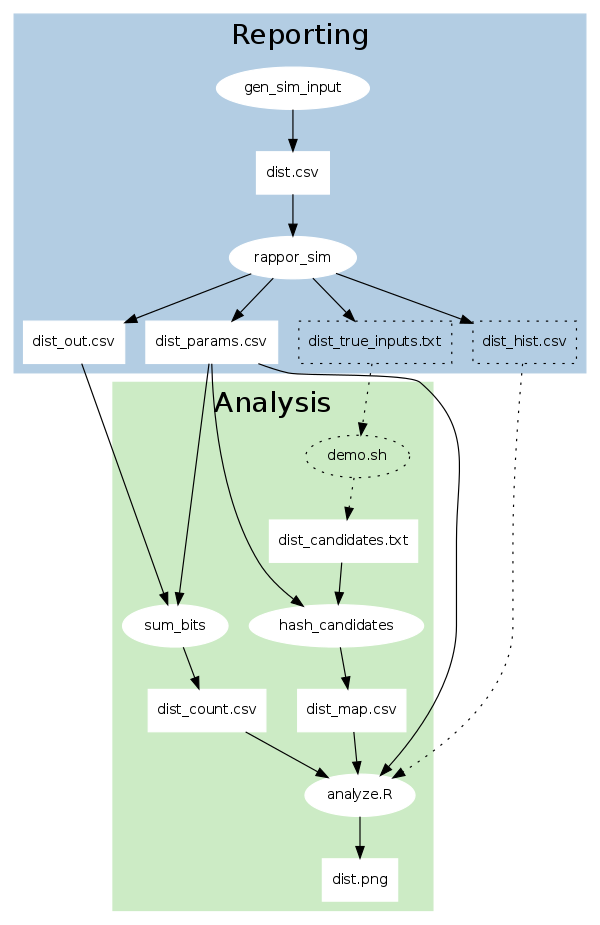

This doc explains the simulation tools and data formats in the RAPPOR repository. We'll focus on the code, and describe the algorithm only informally. For details, see the paper.
Start with this command:
$ ./demo.sh run
It takes a minute or so to run. The dependencies listed in the README must be installed. At the end, it will say:
Wrote _tmp/report.html. Open this in your browser.
It should look like this.
The following diagram shows what processes and files are involved in the demo. Ovals represent processes; rectangles represent data. The dotted lines denote components that are involved in the simulation, but wouldn't be used in a "real" setting.
In most configurations, reporting (in blue) is done by client machines, while analysis (in green) is done by a server.

In the simulation, reporting consists of these steps:
Analysis consists of these steps:
This process is described in detail below.
The tests/gen_sim_input.py tool generates CSV data, like this:
exp.csv
client, true_value
1, v6
1, v3
1, v3
1, v5
1, v13
1, v1
1, v8
2, v2
2, v3
2, v1
2, v8
2, v1
2, v30
2, v10
3, v4
...
(spaces added for clarity)
By default we generate 700,000 rows: 7 random values from v1 to v50 for
each client. These can be thought of as a variable being reported over time.
We're simulating an environment where there are many RAPPOR clients, and a single server does the RAPPOR analysis on the accumulated data.
The client is represented by an integer ID. The true_value should not
be sent over the network because we wish to preserve the client's privacy.
The tests/rappor_sim.py tool uses the Python client library
(client/python/rappor.py) to obscure the v1 .. vN strings. We want to
infer the distribution of these strings over the entire population, but we
don't want to know any individual values.
After the RAPPOR transformation, we get another CSV file with 700,000 rows. Each client is assigned a cohort.
exp_out.csv
client, cohort, rappor
1, 63, 1111101011110111
1, 15, 1110110011111100
1, 12, 0110101111100101
1, 0, 1111100111110111
1, 3, 1001110111110011
1, 14, 1011111010110011
1, 33, 0111010100101011
2, 40, 0011011010101001
2, 35, 1010110101110100
2, 58, 1110110110111110
2, 38, 0010001111001010
2, 5, 1110111011100101
2, 36, 0111010100111111
2, 39, 0101101000101101
3, 32, 0011100111111110
...
(spaces added for clarity)
We also get a one-row CSV file that contains the RAPPOR parameters:
exp_params.csv
k,h,m,p,q,f
16,2,64,0.5,0.75,0.5
These are described in the paper. The parameters that the clients use must be known to the server, or the decoding will fail. In addition, all clients must use the same parameters for a given variable.
The rappor_sim.py process also writes these files:
exp_hist.csv: The true histogram of input values. This is used only for
comparison. In the real world you obviously won't have this.exp_true_inputs.txt: A list of the unique values reported, e.g. v1 ..
v50. You won't have this either, in general. To use RAPPOR, you must
supply candidate strings, described below.sum_bits.py takes the exp_out.csv output, and produces the "counts" file:
exp_counts.csv
11116,6273,6433,6347,6385,6290,6621,6359,6747,6623,6321,6696,6282,6652,6368,6286,6222
10861,6365,6263,6170,6258,6107,6633,6171,6226,6123,6286,6254,6408,6182,6442,6195,6187
...
The file has 64 rows, because the simulation has 64 cohorts by default (m =
64). This parameter should be adjusted based on the number of unique true
values expected.
There are 17 columns. The left-most column is the total number of reports in
the cohort. The remaining 16 columns correspond to the k = 16 bits in the
Bloom filter. Each column contains the number of reports with that bit set
to 1.
So, in general, the "counts" file is a (k+1) * m matrix.
In the simulation, we assume that the analyst will come up with a superset of
the candidate strings. This is done in the more-candidates /
print-candidates functions in demo.sh.
You can also test what happens if you omit true strings from the candidates, by
editing the invocation of print-candidates in run-dist:
# Example of omitting true values. Generate candidates from
# exp_true_inputs.txt, omitting values v1 and v2.
print-candidates $dist 'v1|v2' > _tmp/${dist}_candidates.txt
In general, coming up with candidates is an application- or metric-specific process.
The candidates are hashed by hash_candidates.py to create the "map" file,
before being passed to R for analysis.
exp_map.csv
v1,8,13,30,22,37,37,53,53,77,67,89,86,97,97,118,128,139,136,157,<truncated>
v10,13,2,25,28,42,45,58,60,68,66,91,89,108,102,113,125,130,131,<truncated>
The map file has one row per candidate. In this case, there are 60 rows: 50 for the true values and 10 for "fake" values, which make the candidates a superset of the true input.
The left most column is the raw candidate string. Then there are 128 more
columns: for m = 64 cohorts times k = 2 hash functions in the Bloom filter.
Once you have the counts, params, and map files, you can pass it to the
tests/analyze.R tool, which is a small wrapper around the analyze/R
library.
You will get a plot of the true distribution vs. the distribution recovered with the RAPPOR privacy algorithm.
You can change the simulation parameters and RAPPOR parameters via flags, and compare the resulting distributions.
For example, if you expect more unique values from clients, you should also use
more cohorts (i.e. raise m), to prevent hash function collisions from
degrading the result quality.
RAPPOR allows you infer statistics about populations while preserving the privacy of individual clients. In this doc, we walked through a simple demo. However, there are other variations of RAPPOR and settings in which you can use RAPPOR, which we'll write more about.
Feel free to send feedback on this doc to rappor-discuss@googlegroups.com.